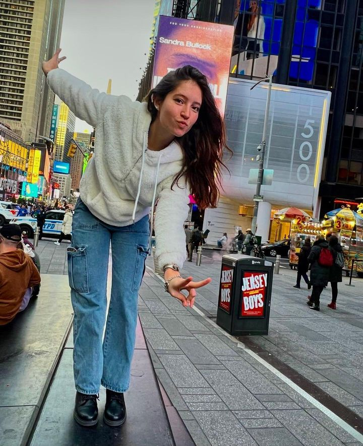
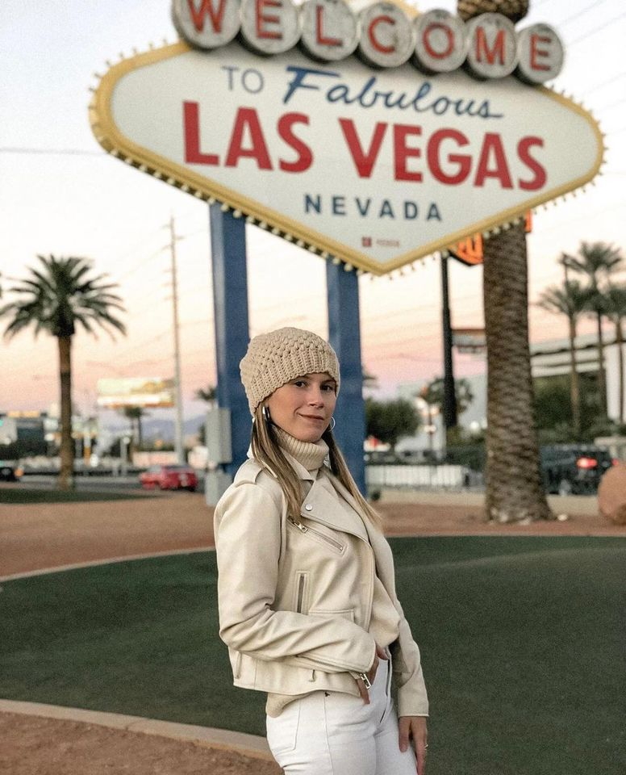

Chiara, 19 años, Corrientes
"También he viajado mucho con la familia, a lugares de playa y hasta a la misma capital, París. Y todo se lo debo en parte a la maravillosa familia de acogida que tuve, siempre pensando en organizar viajes para que yo conociera lo máximo posible. Agradezco muchísimo haber dado con ellos, porque sinceramente no me he sentido sola en ningún momento"
Go somewhereJessica, 25 años, Buenos Aires.
"Todos los procesos, el envío de documentos, la búsqueda de familia, la elección y papeleo posterior fueron muy sencillos y rápidos. Y todo gracias a la agencia que facilita y ayuda en todo momento"
Go somewhere
Milagros, 22 años, Corrientes
"Esta es una experiencia que recomiendo siempre que me preguntan por ella. Y si es acompañada de una agencia eficaz, cercana y rápida como Au Pair Argentina, te aseguro que va a ser muchísimo más fácil!".
Go somewhere
